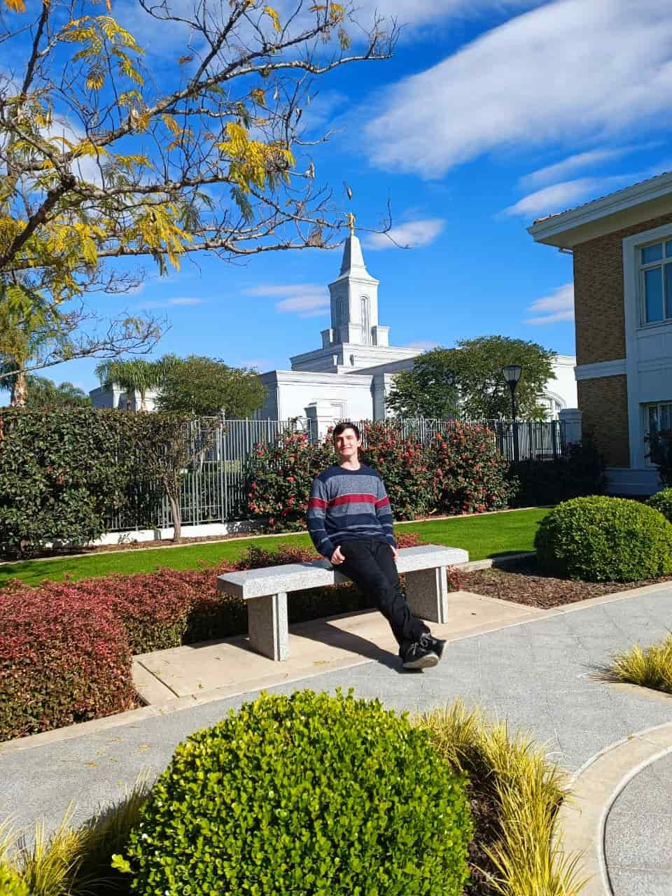

Benjamin Daniel Heredia Urbinatti
About Me
My name is Benjamin Daniel Heredia Urbinatti, I am 20 years old and I live in Cordoba, Argentina. I am currently studying a degree in Computer Science at the National University of Cordoba. I have a passion for technology and programming, and I enjoy learning new things in this field.

Córdoba, Argentina

Official Flag of Argentina
Córdoba is a city located in the center of Argentina. It is known for its rich history, beautiful architecture, and vibrant culture. The city has a strong educational presence, with several universities and research centers. It is also famous for its lively nightlife and delicious cuisine.